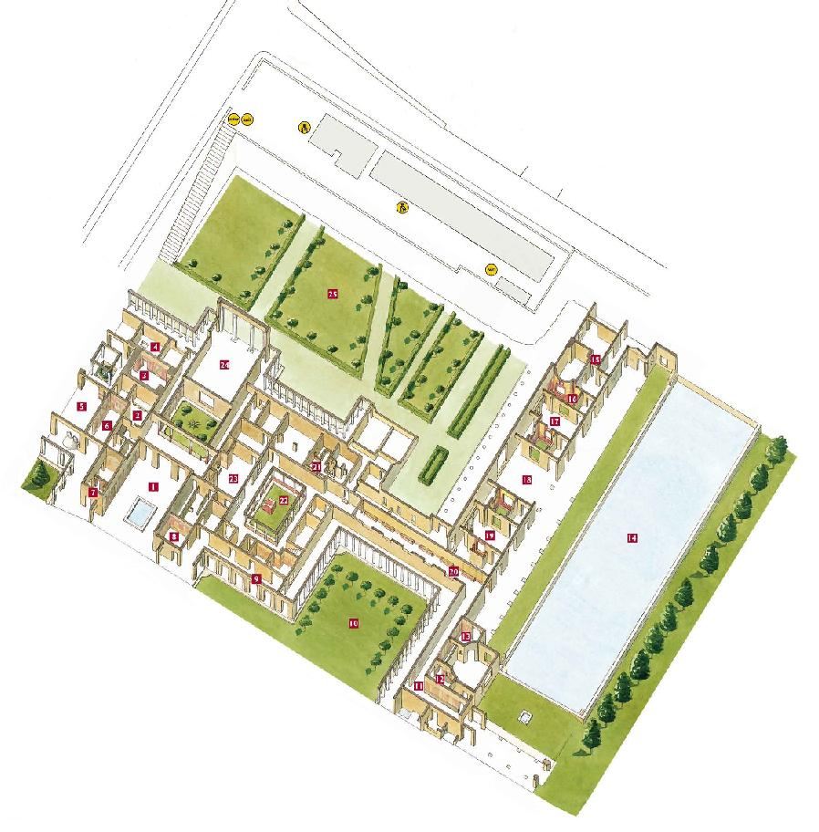

Mapa Villa Poppea
1 – Atrio, 2 – Cocina, 3 – Caldarium, 4 – Tepidarium, 5 – Salón, 6 – Triclinio, 7 – Cubiculum, 8 – Salón, 9 – Pórtico, 10 – Peristilio, 11 – Pasillo, 12 – Oecus, 13 - Oecus, 14 –Piscina, 15 – Hospitalitas, 16 – Huerto, 17 – Salón, 18 – Salón, 19 – Salón, 20 – Pasillo, 21 – Letrina, 22 – Peristilo, 23 – Larario, 24 – Salón, 25 – Huerto.
